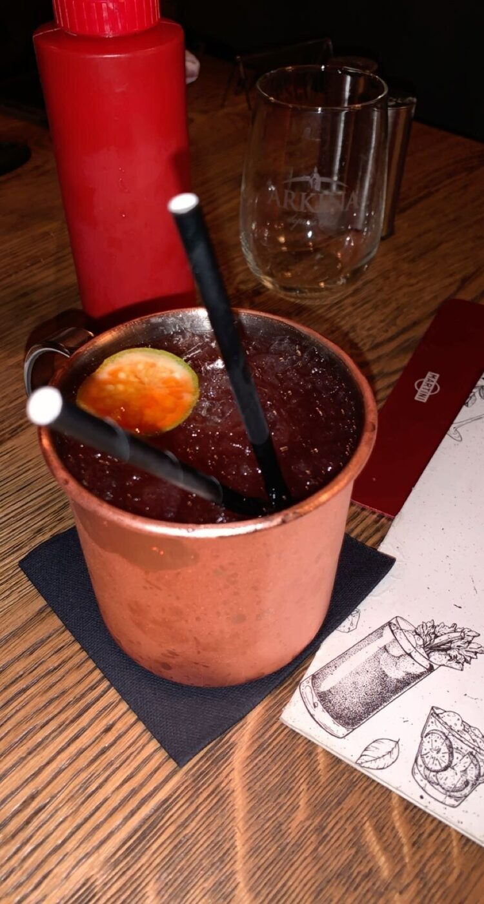
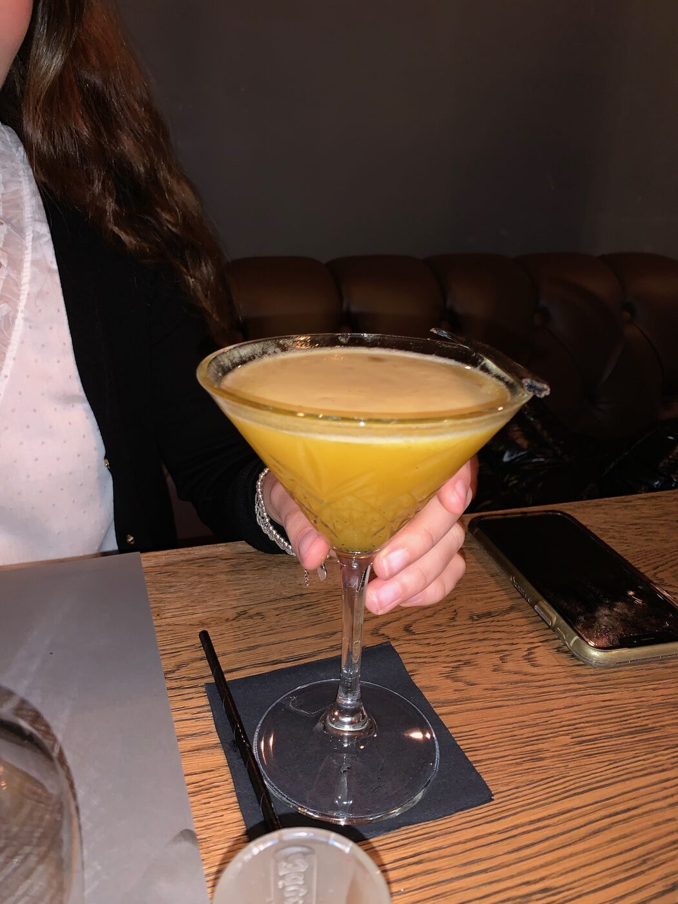
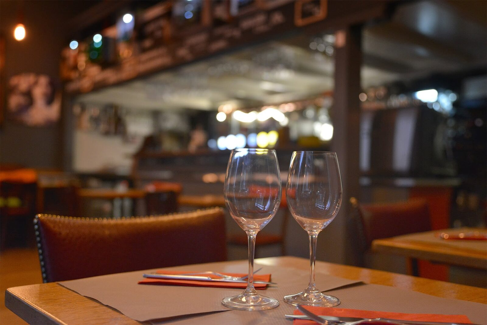
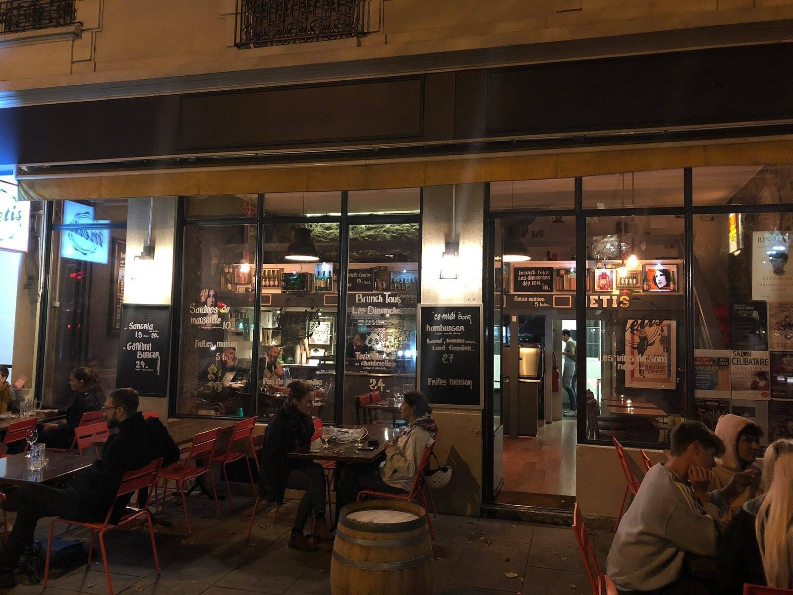
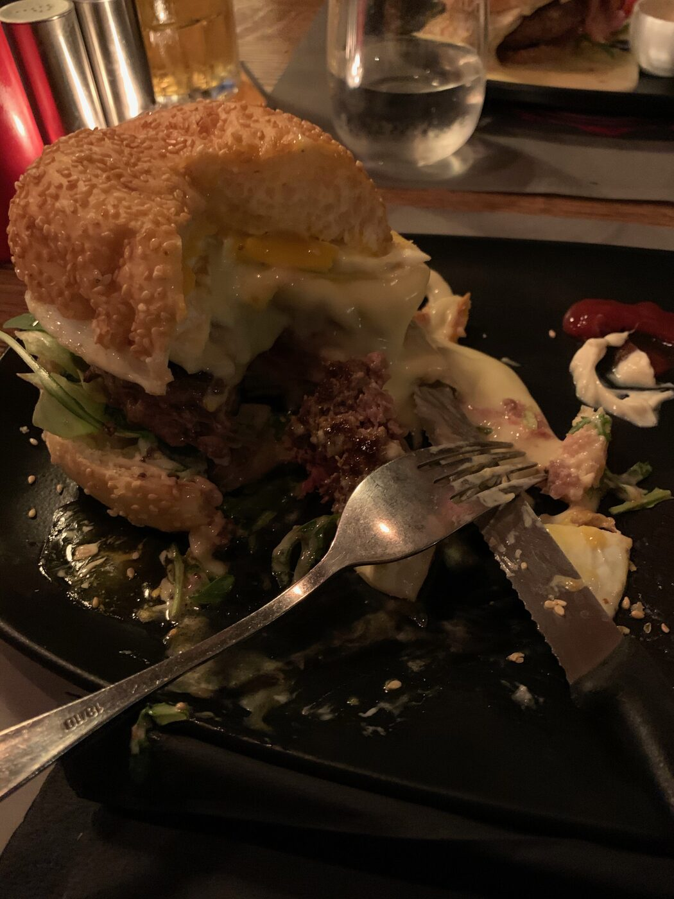
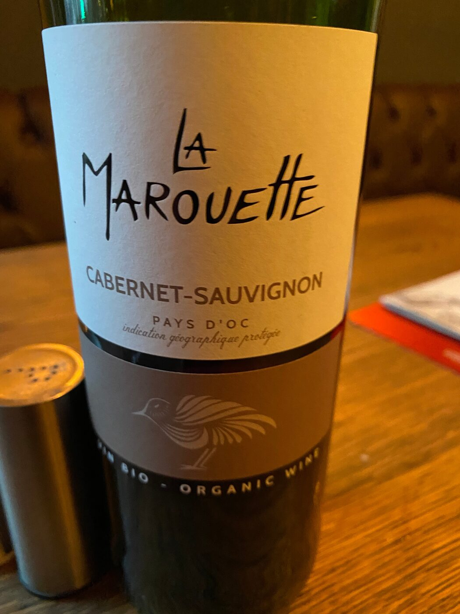

Café · Bar — Plainpalais, Genève
Café le midi,
bar jusqu’à 2 h.
Au cœur de Plainpalais, le Café Metis vous accueille midi et soir : une cuisine maison généreuse à l’heure du déjeuner, puis un bar à l’ambiance bonne franquette — cocktails, bières artisanales et bons crus — jusqu’au bout de la nuit. Good vibes only.
- 4,1/5 · 261 avis Google
- Bd Carl-Vogt 75
- Ouvert tard
La carte
À midi, on passe à table.
Une cuisine maison franche et sans chichis, servie de 11h30 à 15h en semaine. Un aperçu de la carte — elle évolue au fil de l’ardoise du jour et des saisons.
Et chaque jour, son plat du jour sur l’ardoise.
Au bar
Le soir, on refait le monde.
Dès 17h, le café devient bar. Cocktails maison, bières pointues et bons verres, jusqu’à 2 h du matin du jeudi au samedi.


La maison
Un quartier, une table,
de bonnes ondes.
Nouveau concept, nouvelle déco, nouvelle équipe : le Café Metis a fait peau neuve sans rien perdre de son esprit de quartier. On y entre pour un déjeuner pressé et on y reste pour l’apéro — c’est tout l’art de la maison.
Pierre apparente, bois chaud, lumières ambrées et l’enseigne « METIS » au mur : la salle a ce grain rustique et accueillant des bonnes adresses. Aux beaux jours, la terrasse s’installe sur le boulevard ; à l’étage, une mezzanine accueille les tablées plus intimes.
- Service le midi, bar le soir
- Soirées concerts & musique live
- Terrasse sur le boulevard
- Familles bienvenues · cartes acceptées




Les avis
On y revient pour l’ambiance.
-
On y vient assez souvent depuis un an et demi. Une valeur sûre pour boire un verre, et une cuisine au super rapport qualité-prix. Des gens sympas et de bonnes ondes.
Manos Keroulis · Google
-
D’excellents burgers, un beau choix de bières artisanales, une équipe accueillante et une chouette ambiance.
Steve H. · Google
-
J’y suis venue plusieurs fois, pour un verre comme pour manger. L’atmosphère est super conviviale et locale, et la carte de boissons et de cocktails est vraiment large.
Megan S. · TripAdvisor
Nous trouver
Au 75, Boulevard Carl-Vogt.
Boulevard Carl-Vogt 75, 1205 Genève Voir l’itinéraire
| Lundi | 11h30–15h · 17h–23h |
|---|---|
| Mardi | 11h30–15h · 17h–00h |
| Mercredi | 11h30–15h · 17h–01h |
| Jeudi | 11h30–15h · 17h–02h |
| Vendredi | 11h30–15h · 17h–02h |
| Samedi | 17h–02h |
| Dimanche | Fermé |
- Tram & bus à deux pas, arrêt Plainpalais / Écoles-de-Médecine.
- Stationnement difficile aux abords : parking payant et places en rue.
Contact
Écrivez-nous.
Une question, un mot pour une grande tablée, une envie de jouer un soir chez nous ? Passez un coup de fil ou laissez-nous un message — on vous répond avec le sourire.